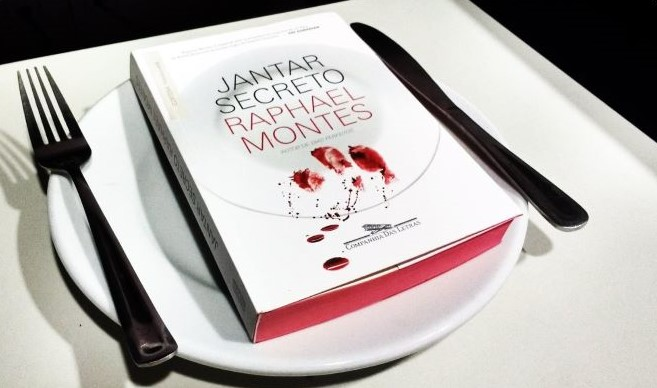

Talvez um dos melhores thrilles brasileiros
Antes de começarmos a nossa maravilhosa resenha, vou apresentar um enigma que esta presente no livro O Jantar Secreto e quero que escreva abaixo a sua resposta para o enigma. Um sujeito estava andando pela rua quando deparou com um restaurante que vendia carne de gaivota. Pediu a carne, comeu, foi para casa e se matou. Por quê?
Apresentando o Autor
Raphael Montes nasceu em 1990, no Rio de Janeiro. Escritor e roteirista, publicou os romances Suicidas, Dias Perfeitos, O Vilarejo, Jantar Secreto e uma Mulher no Escuro, vencedor do Prêmio Jabuti 2020. Seus livros estão traduzidos em mais de 25 países e têm os direitos de adaptação vendidos para o teatro e o cinema. Escreveu os filmes Praça Paris, A Menina que Matou os Pais e O Menino que Matou Meus Pais. É criador, roteirista-chefe e produtor-executivo de Bom dia, Verônica, série de sucesso na Netflix, vencedora do Prêmio APCA 2020 nas categorias melhor ator, melhor atriz e melhor dramaturgia.
Outras Obras do Raphael Montes
Sinopse de "O Jantar Secreto"
Um grupo de jovens deixa uma pequena cidade no Paraná para viver no Rio de Janeiro. Eles alugam um apartamento em Copacabana e fazem o possível para pagar a faculdade e manter vivos seus sonhos de sucesso na capital fluminense. Mas o dinheiro está curto e o aluguel está vencido. Para sair do buraco e manter o apartamento, os amigos adotam uma estratégia heterodoxa: arrecadar fundos por meio de jantares secretos, divulgados pela internet para uma clientela exclusiva da elite carioca. A partir daí, eles se envolvem em uma espiral de crimes, descobrem uma rede de contrabando de corpos, matadouros clandestinos e grã-finos excêntricos, e levam ao limite uma índole perversa que jamais imaginaram existir em cada um deles.